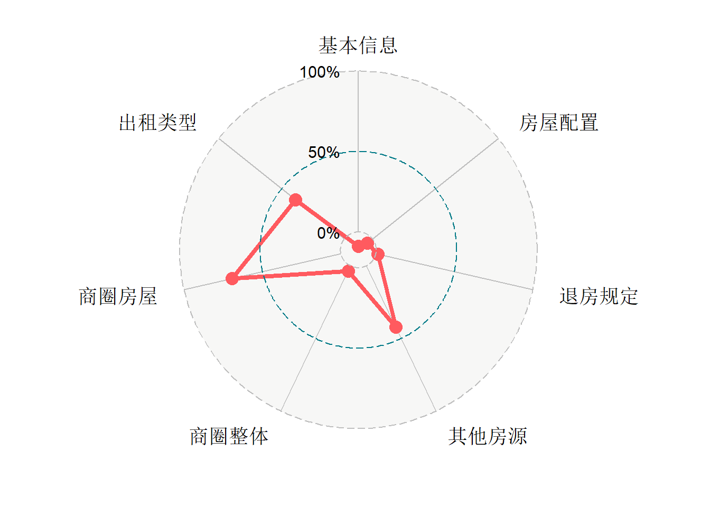

第 7 章 TASK 5 线性回归分析
7.1 学习资料
大家好，从这个任务开始，进入到建模的工作当中。任务的难度开始增加，自学的成分也更重了，我不再提供学习材料。你应该已经习惯高强度的自学，以及摸索出了自己的学习途径。关于线性回归的知识点和案例，参考公众号熊大的数据价值回归系列，以及精品案例的推文。 这个TASK是我们上一期的优秀学员完成的，我希望你们做得更好，具体要求。
下载数据和任务文档。
完成任务文档里面的所有题目，注意解读，注意代码规范和注释！
排版整齐即可，没有特殊要求。
提交HTML文件，由于熊学堂无法直接上传HTML文件，请先压缩再上传压缩文档。
DDL：2018年7月30日晚24:00.
7.2 短租房热度案例
案例难度：***
7.2.1 准备工作
案例背景：短租房是当前火热的“共享经济”的一种，房主将闲置的房屋、房间布置装修，并以按天计费的方式提供短期出租服务。短租房性价比高、个性化、居家感浓厚，已经成为人们出行住宿的新选择，特别是对年轻人和短期游客，短租越来越受到他们的青睐。短租房数据通过对短租平台爬取得到，包括短租房的价格、面积、位置、软硬件条件、评分、评论信息等。其中短租房得到的评论的多少可以用来衡量短租房的热度。通过对短租房数据的统计分析，可以了解短租房的热度受到哪些因素的影响，进而为优化短租房的经营、提升短租房的热度提供参考信息。
案例数据提供了一批短租房的数据，包括：从网页爬取的短租房基本信息、地理位置信息，以及退房规定、房屋配置、房屋得分等。详细的案例介绍请查看案例推文 短租房热度影响因素分析。
这个案例的学习目标包括：
了解短租房数据；
学会对于短租房的数据做适当描述分析，并进行结果解读；
掌握变量构造的思路；
用回归分析寻找短租房热度的影响因素；
以下为数据中的变量及其介绍：
| 变量名 | 变量介绍 |
|---|---|
| vol_num | 短租房评论数 |
| price | 价格 |
| deposit | 押金 |
| area | 面积 |
| capacity | 宜住人数 |
| bed | 床数 |
| room | 房间数 |
| office | 客厅数 |
| toilet | 厕所数 |
| kitchen | 厨房数 |
| balcony | 阳台数 |
| history | 累积上线时间（单位：月） |
| book_type | 出租类型 |
| latitude | 纬度 |
| longitude | 经度 |
| district_with_outer | 城区（四环外各区合并为“其他”） |
| is_foreigner | 是否接待外国人 |
| is_cook | 是否允许做饭 |
| is_party | 是否允许聚会 |
| is_smoke | 是否允许抽烟 |
| is_parking | 是否有停车位 |
| is_security | 是否有门禁系统 |
| is_elevator | 是否有电梯 |
| is_wifi | 是否有wifi |
| is_washing | 是否有洗衣机 |
| is_refrigerator | 是否有冰箱 |
| is_soap | 是否提供肥皂 |
| is_drinkingwater | 是否有饮水机 |
| is_heating | 是否有暖气 |
| is_aircondition | 是否有空调 |
| is_tv | 是否有电视 |
| is_hotwater | 是否有热水 |
| toilet_type | 是否为独立厕所 |
| rule_n | 入住前多少天可退订 |
| rule_a | 退订需要扣除前多少天的定金 |
| otherscore_clean | 房主其他房源清洁卫生得分 |
| otherscore_description | 房主其他房源描述相符得分 |
| otherscore_trans | 房主其他房源交通得分 |
| otherscore_safe | 房主其他房源安全得分 |
| otherscore_performance | 房主其他房源性价比得分 |
| subway_num | 附近地铁数量（定性变量，水平为：“3个以上”、“3个以下”） |
| hospital_num | 附近是否有医院 |
| college_num | 附近是否有学校 |
| scenic_spot_num | 附近是否有景点 |
| price_landmark_mean | 同商圈短租房平均价格 |
| vol_landmark_mean | 同商圈短租房平均评论数 |
| vol_other_landmark_mean | 同商圈房主平均其他房源评论数 |
| sp2 | 同商圈房屋中该短租房价格排名的比例 |
| sp4 | 同商圈房屋中该短租房面积排名的比例 |
| sp6 | 同商圈房屋中该短租房清洁卫生得分排名的比例 |
| sp8 | 同商圈房屋中该短租房描述相符得分排名的比例 |
| sp10 | 同商圈房屋中该短租房交通得分排名的比例 |
| sp12 | 同商圈房屋中该短租房安全得分排名的比例 |
| sp14 | 同商圈房屋中该短租房性价比得分排名的比例 |
| sp16 | 同商圈房屋中该短租房价格面积比排名的比例 |
附近定义为：2500m内
商圈为通过百度地图接口，根据经纬度定位确定房屋所属的商圈。
7.2.2 分析报告 & 代码
环境设置
###清除工作环境###
rm(list = ls())###安装需要的程序包###
devtools::install_github( "ricardo-bion/ggradar", dependencies= TRUE)###加载程序包###
library(ggplot2)
library(lubridate)
library(plyr)
library(ggradar)
library(data.table)任务一
找到数据data。读入样本数据（提前设置好工作路径），命名为dat0。用summary函数查看数据记录的变量等情况。将样本量定义为n，也就是观测数。
setwd("D:/Melody_Ren/onedrive/Rworkspace/bearclub") #设置工作路径
dat0 <- read.csv("data.csv") #读入文件中的数据并命名
dat1 <- dat0 #对原始数据备份，用于分析
summary(dat0) #查看数据记录的变量等情况## house_id vol_num price
## Min. :1.10e+07 Min. : 1.0 Min. : 39
## 1st Qu.:2.92e+09 1st Qu.: 3.0 1st Qu.: 188
## Median :6.32e+09 Median : 6.0 Median : 299
## Mean :7.72e+09 Mean : 12.3 Mean : 355
## 3rd Qu.:1.21e+10 3rd Qu.: 15.0 3rd Qu.: 428
## Max. :2.06e+10 Max. :219.0 Max. :10000
## deposit area capacity
## Min. : 0 Min. : 4.0 Min. : 1.00
## 1st Qu.: 200 1st Qu.: 18.0 1st Qu.: 2.00
## Median : 300 Median : 45.0 Median : 2.00
## Mean : 346 Mean : 49.6 Mean : 2.99
## 3rd Qu.: 500 3rd Qu.: 65.0 3rd Qu.: 4.00
## Max. :7000 Max. :750.0 Max. :10.00
## bed room office
## Min. : 1.00 Min. : 0.00 Min. :0.00
## 1st Qu.: 1.00 1st Qu.: 1.00 1st Qu.:1.00
## Median : 1.00 Median : 2.00 Median :1.00
## Mean : 1.72 Mean : 2.09 Mean :1.01
## 3rd Qu.: 2.00 3rd Qu.: 3.00 3rd Qu.:1.00
## Max. :18.00 Max. :17.00 Max. :6.00
## toilet kitchen balcony
## Min. : 0.00 Min. : 0.000 Min. :0.000
## 1st Qu.: 1.00 1st Qu.: 1.000 1st Qu.:1.000
## Median : 1.00 Median : 1.000 Median :1.000
## Mean : 1.21 Mean : 0.951 Mean :0.949
## 3rd Qu.: 1.00 3rd Qu.: 1.000 3rd Qu.:1.000
## Max. :17.00 Max. :11.000 Max. :6.000
## history book_type latitude
## Min. : 1.0 床位出租: 115 Min. :39.6
## 1st Qu.: 3.0 独立单间:1327 1st Qu.:39.9
## Median : 7.0 沙发出租: 38 Median :39.9
## Mean :10.8 整套出租:2331 Mean :39.9
## 3rd Qu.:15.0 3rd Qu.:40.0
## Max. :53.0 Max. :40.4
## longitude district_with_outer is_foreigner
## Min. :116 朝阳区:1666 Min. :0.000
## 1st Qu.:116 东城区: 371 1st Qu.:0.000
## Median :116 丰台区: 341 Median :1.000
## Mean :116 海淀区: 642 Mean :0.634
## 3rd Qu.:116 其他 : 489 3rd Qu.:1.000
## Max. :117 西城区: 302 Max. :1.000
## is_cook is_wifi is_party
## Min. :0.000 Min. :0.000 Min. :0.000
## 1st Qu.:1.000 1st Qu.:1.000 1st Qu.:0.000
## Median :1.000 Median :1.000 Median :0.000
## Mean :0.809 Mean :0.994 Mean :0.305
## 3rd Qu.:1.000 3rd Qu.:1.000 3rd Qu.:1.000
## Max. :1.000 Max. :1.000 Max. :1.000
## is_washing is_refrigerator is_smoke
## Min. :0.000 Min. :0.000 Min. :0.000
## 1st Qu.:1.000 1st Qu.:1.000 1st Qu.:0.000
## Median :1.000 Median :1.000 Median :0.000
## Mean :0.958 Mean :0.965 Mean :0.429
## 3rd Qu.:1.000 3rd Qu.:1.000 3rd Qu.:1.000
## Max. :1.000 Max. :1.000 Max. :1.000
## is_parking is_security is_elevator
## Min. :0.000 Min. :0.000 Min. :0.000
## 1st Qu.:0.000 1st Qu.:0.000 1st Qu.:0.000
## Median :0.000 Median :1.000 Median :1.000
## Mean :0.469 Mean :0.695 Mean :0.727
## 3rd Qu.:1.000 3rd Qu.:1.000 3rd Qu.:1.000
## Max. :1.000 Max. :1.000 Max. :1.000
## is_soap is_drinkingwater is_heating
## Min. :0.000 Min. :0.000 Min. :0.000
## 1st Qu.:0.000 1st Qu.:0.000 1st Qu.:1.000
## Median :1.000 Median :1.000 Median :1.000
## Mean :0.738 Mean :0.745 Mean :0.965
## 3rd Qu.:1.000 3rd Qu.:1.000 3rd Qu.:1.000
## Max. :1.000 Max. :1.000 Max. :1.000
## is_aircondition is_tv is_hotwater
## Min. :0.000 Min. :0.000 Min. :0.000
## 1st Qu.:1.000 1st Qu.:1.000 1st Qu.:1.000
## Median :1.000 Median :1.000 Median :1.000
## Mean :0.967 Mean :0.813 Mean :0.996
## 3rd Qu.:1.000 3rd Qu.:1.000 3rd Qu.:1.000
## Max. :1.000 Max. :1.000 Max. :1.000
## toilet_type rule_n rule_a
## Min. :0.000 Min. :1.00 Min. :1.00
## 1st Qu.:0.000 1st Qu.:1.00 1st Qu.:1.00
## Median :1.000 Median :3.00 Median :1.00
## Mean :0.655 Mean :3.54 Mean :2.74
## 3rd Qu.:1.000 3rd Qu.:7.00 3rd Qu.:4.00
## Max. :1.000 Max. :7.00 Max. :7.00
## otherscore_clean otherscore_description
## Min. :3.00 Min. :3.60
## 1st Qu.:4.80 1st Qu.:4.80
## Median :4.90 Median :4.90
## Mean :4.87 Mean :4.88
## 3rd Qu.:5.00 3rd Qu.:5.00
## Max. :5.00 Max. :5.00
## otherscore_trans otherscore_safe
## Min. :3.30 Min. :3.60
## 1st Qu.:4.80 1st Qu.:4.90
## Median :4.90 Median :5.00
## Mean :4.88 Mean :4.92
## 3rd Qu.:5.00 3rd Qu.:5.00
## Max. :5.00 Max. :5.00
## otherscore_performance subway_num hospital_num
## Min. :3.00 3个以上:3381 无: 5
## 1st Qu.:4.80 3个以下: 430 有:3806
## Median :4.90
## Mean :4.85
## 3rd Qu.:5.00
## Max. :5.00
## college_num scenic_spot_num price_landmark_mean
## 无: 81 无: 7 Min. : 88.7
## 有:3730 有:3804 1st Qu.: 319.2
## Median : 362.2
## Mean : 370.7
## 3rd Qu.: 402.5
## Max. :2163.6
## vol_landmark_mean vol_other_landmark_mean
## Min. : 0.00 Min. : 0.0
## 1st Qu.: 5.83 1st Qu.: 30.6
## Median : 7.04 Median : 41.5
## Mean : 7.50 Mean : 49.0
## 3rd Qu.: 8.93 3rd Qu.: 66.7
## Max. :15.69 Max. :167.7
## sp2 sp4 sp6
## Min. :0.000 Min. :0.000 Min. :0.000
## 1st Qu.:0.194 1st Qu.:0.257 1st Qu.:0.000
## Median :0.440 Median :0.526 Median :0.531
## Mean :0.456 Mean :0.515 Mean :0.430
## 3rd Qu.:0.703 3rd Qu.:0.786 3rd Qu.:0.700
## Max. :0.994 Max. :0.995 Max. :0.992
## sp8 sp10 sp12
## Min. :0.000 Min. :0.000 Min. :0.000
## 1st Qu.:0.000 1st Qu.:0.000 1st Qu.:0.000
## Median :0.556 Median :0.571 Median :0.625
## Mean :0.442 Mean :0.439 Mean :0.466
## 3rd Qu.:0.710 3rd Qu.:0.722 3rd Qu.:0.745
## Max. :0.992 Max. :0.992 Max. :0.988
## sp14 sp16
## Min. :0.000 Min. :0.000
## 1st Qu.:0.000 1st Qu.:0.454
## Median :0.500 Median :0.537
## Mean :0.418 Mean :0.522
## 3rd Qu.:0.712 3rd Qu.:0.593
## Max. :0.988 Max. :0.981n <- nrow(dat0) #观测数据数量n
n #查看n值## [1] 3811任务二
绘制短租房评论数的直方图，通过这个任务，你可以了解短租房评论的分布情况。
###设置画图theme###
my_ggtheme <- function(){
theme(axis.title.x = element_text(size = 16))+
theme(axis.title.y = element_text(size = 16))+
theme(axis.text.x = element_text(size = 16))+
theme(axis.text.y = element_text(size = 16))
}
###绘制短租房评论数的直方图###
ggplot(dat1, aes(x = vol_num)) +
geom_histogram(binwidth = 10, fill="lightblue", color = "black") +
labs(x = "评论数", y = "频数") +
my_ggtheme()描述与解读
短租房的评论数量呈现明显的右偏分布。具体地，只有23.3%的短租房超过15人评论，门庭冷落的短租房较多，约有67.3%的短租房评论数不超过10条，因此大多数短租房的热度都偏低。其中，评论数最多（219条）的短租房是位于北京市西城区月坛街道真武庙社区的整套出租房，其附近有3个以上的地铁站，并且还有医院、学校和景点，可谓是短租房中的战斗机。
任务三
分别绘制价格-评论数与面积-评论数对比箱线图，分析短租房的价格和面积与短租房热度之间的关系。
dat1 <- data.table(dat1)
dat1[,price_flag := "小于或等于300元"]
dat1[price > 300, price_flag := "大于300元"] #以300元为分界线，对价格分类
dat1[,area_flag := "小于或等于50平米"]
dat1[area > 50, area_flag := "大于50平米"] #以50平米为分界线，对面积分类
###绘制价格-评论数对比箱线图###
dat1$price_flag = factor(dat1$price_flag, levels=c("小于或等于300元","大于300元")) #调整将价格的排序
ggplot(dat1, aes(x = price_flag, y = log(vol_num), group = price_flag)) + #绘制箱线图
geom_boxplot(fill = c("lightblue","lightpink")) + #设置箱子填充颜色
labs(x = "价格",y = "对数评论数") + #坐标轴名称
my_ggtheme()###绘制面积-评论数对比箱线图###
dat1$area_flag = factor(dat1$area_flag, levels=c("小于或等于50平米","大于50平米")) #调整面积的排序
ggplot(dat1, aes(x = area_flag, y = log(vol_num), group = area_flag)) + #绘制箱线图
geom_boxplot(fill = c("lightblue","lightpink")) + #设置箱子填充颜色
labs(x = "面积",y = "对数评论数") + #坐标轴名称
my_ggtheme()描述与解读
从分组箱线图可以看出，不同价格的短租房和不同面积的短租房热度有一定的差异。其中，价格小于或等于300元和面积小于或等于50平米的的短租房热度更高，一种合理的推测是：短租房的需求更多来自于外地居民，由于较为迫切的需求，导致其对面积的要求不高，并且年轻人的经济实力不是很强，因此“便宜又小巧”成为短租房中更受青睐的种类。
任务四
统计各城区（四环外其他各区合并记为“其他”）的平均评论数，及短租房数量，并绘制城区-平均评论数的柱状图。
plot_district <- as.data.frame(aggregate(dat1$vol_num, list(dat1$district_with_outer), mean)) #按城区分组统计热度均值
colnames(plot_district) <- c("district_name","ave_price") #给数据框重命列名
ggplot(plot_district) + #绘制城区-平均评论数的柱状图
geom_bar(aes(x = reorder(district_name, -ave_price), y = ave_price), #绘制条形图
stat = "identity", fill = "lightblue", color = "black")+ #按照柱状图高低排序
geom_text(aes(x = district_name, y = ave_price, label = round(ave_price,1)), vjust = -0.3)+ #添加数据标签
labs(x = "", y = "平均评论数", caption = "（样本数量：341、642、302、1666、371、489）") + #添加坐标轴名称和副标题
my_ggtheme()
描述与解读
通过条形图可以看出，虽然西城区的短租房数量最多，但是丰台区的房源热度（评价数量）最多，其他地区的房源热度最低。看来虽然西城区更靠近北京市中心，终究也是敌不过丰台区性价比更高的短租房来得“讨人欢心”。
任务五
以房主其他房源的性价比得分、描述相符得分为例，绘制对比柱状图来探索这些变量和平均评论数之间的关系。
dat1[,c("other_clean_flag","other_disc_flag",
"other_trans_flag","other_safe_flag","other_perf_flag") := c("小于或等于4.8分")]
dat1[otherscore_clean > 4.8, other_clean_flag := "大于4.8分"]
dat1[otherscore_description > 4.8, other_disc_flag := "大于4.8分"]
dat1[otherscore_trans > 4.8, other_trans_flag := "大于4.8分"]
dat1[otherscore_safe > 4.8, other_safe_flag := "大于4.8分"]
dat1[otherscore_performance > 4.8, other_perf_flag := "大于4.8分"]
PlotOtherSource <- function(other_source_flag){ #定义“绘制其他房源得分”函数，输入值为得分方面
other_flag <- dat1[,mean(vol_num), by = get(other_source_flag)] #按照得分高低统计热度均值
colnames(other_flag) <- c("other_factor","ave_vol_num") #给数据框重命列名
other_flag$other_factor = factor(other_flag$other_factor,
levels=c("小于或等于4.8分","大于4.8分")) #调整得分的排序
ggplot(other_flag, aes(x = other_factor ,y = ave_vol_num,fill = other_factor)) + #绘制得分-平均评论数柱状图
geom_bar(stat = 'identity', fill = c("lightblue","lightpink"), color = "black") + #设置颜色
labs(x = "", y = "平均评论数", #坐标轴名称
caption = paste("（样本数量：", #副标题名称，计算样本量
nrow(dat1[other_source_flag == "小于或等于4.8分"]),
"、",
nrow(dat1[other_source_flag == "大于4.8分"]),
"）")) +
geom_text(aes(x = other_factor, y = ave_vol_num, label = round(ave_vol_num,1), vjust = -0.5)) + #添加数据标签
my_ggtheme()
}PlotOtherSource("other_disc_flag") #绘制描述得分-平均评论数柱状图PlotOtherSource("other_perf_flag") #绘制性价比得分-平均评论数柱状图
描述与解读
通过两个柱状图可以看出，对其他房源表述相符得分和性价比得分方面，都是高分（大于4.8分）样本数量较多，而房主其他房源高分的短租房热度也高于其他房源低分的短租房。这说明大多数房主经营的租住房在性价比和描述相符方面都是较为优秀的，并且这会具有良性循环的效果，“你好我好大家好”，其他房源评价高，那这间房屋也不差。
任务六
建立回归模型来分析短租房评论数和各影响因素之间的关系，观察最终得到的回归系数并尝试解释对系数进行解释。
###建立回归模型###
tem_house <- dat0 #拷贝原始数据作为建模数据
tem_house$log_price <- log(tem_house$price) #对价格取对数
tem_house$log_history <- log(tem_house$history) #对累积在线时长取对数
tem_house <- tem_house[,-3] #在模型数据中删除原始价格数据
tem_house <- tem_house[,-12] #删除原始在线时长数据
tem_house <- tem_house[,-1] #删除短租房ID
lm.full <- lm(log(vol_num) ~ ., data=tem_house) #建立全模型，因变量为对数评论数，自变量为其他所有变量
lm.null <- lm(log(vol_num) ~ 1,data=tem_house) #建立空模型，因变量为对数评论数，不包括任何自变量
lm.bic <- step(lm.full,k=log(n),trace=F) #使用BIC准则选择模型
summary(lm.bic) #观察最终得到的回归系数##
## Call:
## lm(formula = log(vol_num) ~ area + book_type + is_smoke + is_parking +
## is_drinkingwater + rule_n + rule_a + otherscore_clean + otherscore_description +
## price_landmark_mean + vol_landmark_mean + sp6 + sp8 + sp10 +
## sp12 + sp16 + log_price + log_history, data = tem_house)
##
## Residuals:
## Min 1Q Median 3Q Max
## -1.8871 -0.4414 -0.0467 0.4314 2.3243
##
## Coefficients:
## Estimate Std. Error t value
## (Intercept) -3.567264 0.379302 -9.40
## area 0.001091 0.000360 3.03
## book_type独立单间 0.024818 0.065899 0.38
## book_type沙发出租 -0.212920 0.119676 -1.78
## book_type整套出租 0.303494 0.072467 4.19
## is_smoke -0.073270 0.022206 -3.30
## is_parking -0.064830 0.021559 -3.01
## is_drinkingwater 0.079655 0.024705 3.22
## rule_n 0.031557 0.005814 5.43
## rule_a -0.018085 0.006306 -2.87
## otherscore_clean 0.379932 0.101212 3.75
## otherscore_description 0.609519 0.111464 5.47
## price_landmark_mean 0.000428 0.000108 3.95
## vol_landmark_mean 0.035380 0.004169 8.49
## sp6 0.483276 0.077611 6.23
## sp8 0.435986 0.084961 5.13
## sp10 0.548505 0.066734 8.22
## sp12 0.528108 0.078227 6.75
## sp16 -0.352273 0.086484 -4.07
## log_price -0.302287 0.031722 -9.53
## log_history 0.429846 0.012848 33.46
## Pr(>|t|)
## (Intercept) < 2e-16 ***
## area 0.00249 **
## book_type独立单间 0.70649
## book_type沙发出租 0.07530 .
## book_type整套出租 2.9e-05 ***
## is_smoke 0.00098 ***
## is_parking 0.00265 **
## is_drinkingwater 0.00127 **
## rule_n 6.1e-08 ***
## rule_a 0.00416 **
## otherscore_clean 0.00018 ***
## otherscore_description 4.8e-08 ***
## price_landmark_mean 7.8e-05 ***
## vol_landmark_mean < 2e-16 ***
## sp6 5.3e-10 ***
## sp8 3.0e-07 ***
## sp10 2.8e-16 ***
## sp12 1.7e-11 ***
## sp16 4.7e-05 ***
## log_price < 2e-16 ***
## log_history < 2e-16 ***
## ---
## Signif. codes:
## 0 '***' 0.001 '**' 0.01 '*' 0.05 '.' 0.1 ' ' 1
##
## Residual standard error: 0.638 on 3790 degrees of freedom
## Multiple R-squared: 0.706, Adjusted R-squared: 0.705
## F-statistic: 455 on 20 and 3790 DF, p-value: <2e-16描述与解读
经过变量选择后，得到最终的对数线性回归模型。根据模型的系数，在控制其他因素不变时，可以得到如下结论：
- 短租房的基本信息中，价格越低，面积越大，评论数越多；
- 房屋的累计上线时间每多一个月，则热度会提升0.43条；
- 对于出租类型这一变量，沙发出租的最低，整套出租的房屋热度最高，比床位出租短租房的评论数量每间高出0.3条；
- 在房屋配置中，有饮水机的热度最高，其次是允许抽烟的房屋，有停车位的热度更低；
- 有关退房规定，入住前可退定限制天数越多，租房热度越高，退订扣除的定金越多，租房热度越低；
- 对于房主其他房源评分这一变量，描述相符评分每高出1分，则评论数会增加0.6，其次，干净卫生评分每高1分，评论数增加0.38条；
- 同商圈房屋整体平均热度越高，该短租房的热度越高；
- 在同商圈房屋中，该短租房在卫生得分、描述相符得分、交通得分、安全得分中排名越高，其热度越高，价格面积比排名越低，热度也会越高。
这些结论与之前的猜想基本符合，而且模型的F检验拒绝原假设，说明建立的模型是显著的；调整的\(R^2\)为0.7045，模型的拟合程度较好。
任务七
使用任务六中得到的回归模型预测某房屋半年后收获的评论数，结果为13条。
predict_set <- data.frame(area = 17, book_type = "独立单间", #将该短租房18个自变量设置为数据框
is_smoke = 0, is_parking = 0, is_drinkingwater = 0,
rule_n = 4,rule_a = 3,
otherscore_clean = 4.7, otherscore_description = 4.9,
price_landmark_mean = 10, vol_landmark_mean = 350,
sp6 = 0.2, sp8 = 0.2, sp10 = 0.2, sp12 = 0.2, sp16 = 0.9,
log_history = log(6), log_price = log(200))
predict_vol_num <- predict(lm.bic, predict_set) #使用task6中的模型对评论数做预测
round(predict_vol_num,0) #将预测值四舍五入得到评论数## 1
## 13任务八
基于任务七中的短租房的数据绘制雷达图，根据以下几个方面描述该短租房的优势、劣势，对短租房的优化布置提供建议。
coeff <- as.data.frame(t(as.matrix(lm.bic$coefficients))) #回归系数数据框
coeff_to_percentile <- coeff[,c(2,5:21)] #在出租类型只取一列，数据框列数等于自变量数量
GetPercentile <- function(variable_name){ #定义获取相对位置（percentile）的函数，输入值为自变量名称
a <- ecdf(tem_house[,variable_name]) #累积概率密度
t <- a(predict_set[,variable_name])
return(t) #返回值为输入变量在全部数据中的排名相对位置
}
variable_percentile <- c() #变量相对位置向量
for (i in c(1,2:18)){ #除去出租类型，计算其他变量排名相对位置
if(coeff_to_percentile[1,i] > 0) #回归系数为正，取累计概率密度；反之，取1-累计概率密度
variable_percentile[i] <- GetPercentile(colnames(predict_set)[i])
else variable_percentile[i] <- 1-GetPercentile(colnames(predict_set)[i])
}
var_percentile <- as.data.frame(t(as.matrix(variable_percentile))) #相对位置向量设置为数据框
colnames(var_percentile) <- colnames(predict_set) #取列名
###基本信息得分###
basic_info <- coeff_to_percentile[,c("area","log_price")] #取回归系数为权重
basic_info_score <- sum(var_percentile$area*basic_info$area, #对第一个维度下的变量相对位置加权
var_percentile$log_price*basic_info$log_price)
###房屋配置得分###
house_allo <- coeff_to_percentile[,c("is_smoke","is_parking","is_drinkingwater")]
house_allo_score <- sum(var_percentile$is_smoke*house_allo$is_smoke,
var_percentile$is_parking*house_allo$is_parking,
var_percentile$is_drinkingwater*house_allo$is_drinkingwater)
###退房规定得分###
check_out <- coeff_to_percentile[,c("rule_n","rule_a")]
check_out_score <- sum(var_percentile$rule_a*check_out$rule_a,
var_percentile$rule_n*check_out$rule_n)
###其他房源评分###
other_source <- coeff_to_percentile[,c("otherscore_clean","otherscore_description")]
other_source_score <- sum(var_percentile$otherscore_clean*other_source$otherscore_clean,
var_percentile$otherscore_description*other_source$otherscore_description)
###同商圈房屋整体情况###
landmark <- coeff_to_percentile[,c("price_landmark_mean","vol_landmark_mean")]
landmark_score <- sum(var_percentile$price_landmark_mean*landmark$price_landmark_mean,
var_percentile$vol_landmark_mean*landmark$vol_landmark_mean)
###同商圈房屋比较###
sp <- coeff_to_percentile[,c("sp6","sp8","sp10","sp12","sp16")]
sp_score <- sum(var_percentile$sp6*sp$sp6,
var_percentile$sp8*sp$sp8,
var_percentile$sp10*sp$sp10,
var_percentile$sp12*sp$sp12,
var_percentile$sp16*sp$sp16)
###出租类型得分###
#出租类型的系数排名为：整套出租>独立单间>床位出租>沙发出租
book_type_score <- 1 - nrow(tem_house[which(tem_house$book_type == "整套出租"),])/n #出租类型的相对位置
###将7个维度下的得分放入rardarplot数据框
rardarplot <- data.frame(V1 = "维度","基本信息" = basic_info_score, "房屋配置" = house_allo_score,
"退房规定" = check_out_score, "其他房源" = other_source_score,
"商圈整体" = landmark_score, "商圈房屋" = sp_score, "出租类型" = book_type_score)
###绘制雷达图###
ggradar(rardarplot, grid.label.size = 5, axis.label.size = 5, group.point.size = 4, plot.legend = FALSE)+
theme(legend.position = "none")说明
每个维度得分的计算方法：
- 对于出租类型，按照每种取值的回归系数大小排序后，计算其相对位置的累计概率密度；
- 对于除去出租类型的其他维度，以该维度下的每个自变量在原数据集对应变量的相对位置为被加权值，以每个自变量的回归系数为权重，进行加权，得到得分。
描述与解读
该短租房在同商圈房屋卫生得分、描述相符得分、交通得分、安全得分、价格面积比中排名占有较大优势，房主的其他房源评分也是一大优势。然而，在同商圈房屋平均价格、平均评论数两个方面较为劣势，“独立单间”的出租类型也降低该出租房的竞争力；此外，退房规定也是该房屋评论数上升的潜在威胁。
根据该房屋雷达图和任务七中的系数解读，为提高该短租房的热度（评论数），对该房主提出几点建议：
- 继续保持其在同商圈房屋各方面得分的排名；
- 继续保持其他房源评分水平；
- 对照同商圈房屋的平均评分，适当降低该房屋的出租价格；
- 将出租类型调整为“整套出租”；
- 尽量增加入住前可提前退订天数，减少退订扣除的定金。
7.2.3 标准答案代码
标准答案和上述分析报告中附上的代码差别主要在最后一部分雷达图的计算方法上。
######准备工作######
# 清除工作环境
cat('\014')
rm(list = ls())
######任务一######
dat0 = read.csv("data.csv",header = T, fileEncoding = "gbk") #读入样本数据
summary(dat0) #查看数据的基本情况
######任务二######
# 绘制短租房评论数直方图
hist(
dat0$vol_num, #该列为短租房评论数
main = NULL, #设置为无标题
breaks = 20, #设置条形数量为20
xlab = "评论数", #x轴标题为评论数
col = "#FEBF00", #设置颜色
ylab = "频数" #y轴标题为频数
)
######任务三######
# 价格-评论数
price_0 <- subset(dat0, dat0$price <= 300)$vol_num #提取小于等于300元的短租房的评论数
price_1 <- subset(dat0, dat0$price > 300)$vol_num #提取大于300元的短租房的评论数
# 绘制对比箱线图。短租房评论数极差较大，作图效果较差，于是采用对数评论数作图
boxplot(
main = NULL, #设置为无标题
varwidth = T, #设置箱体宽度与样本数量相关
col = c("#A5A5A5", "#FEBF00"), #设置颜色
ylab = "对数评论数", #y轴标题为对数评论数
names = c("小于或等于300元", "大于300元"), #设置箱体名称
log(price_0), #对小于等于300元的短租房评论数取对数
log(price_1) #对大于300元的短租房评论数取对数
)
# 面积-评论数
area_0 <- subset(dat0, dat0$area <= 50)$vol_num #提取小于等于50平米的短租房的评论数
area_1 <- subset(dat0, dat0$area > 50)$vol_num #提取大于50平米的短租房的评论数
# 绘制对比箱线图。短租房评论数极差较大，作图效果较差，于是采用对数评论数作图
boxplot(
main = NULL, #设置为无标题
varwidth = T, #设置箱体宽度与样本数量相关
col = c("#A5A5A5", "#FEBF00"), #设置颜色
ylab = "对数评论数", #y轴标题为对数评论数
names = c("小于或等于50平米", "大于50平米"), #设置箱体名称
log(area_0), #对小于等于50平米的短租房评论数取对数
log(area_1) #对大于50平米的短租房评论数取对数
)
######任务四######
stat <- tapply(dat0$vol_num, dat0$district_with_outer, mean) #统计每个城区的短租房平均评论数
stat_order <- order(stat, decreasing = T) #获得城区短租房平均评论数从大到小的顺序
stat <- stat[stat_order] #将统计结果按照平均评论数大小从大到小排序
counts <- table(dat0$district_with_outer)[stat_order] # 统计样本数量
# 绘制柱状图
p <- barplot(
stat, #统计结果
ylim = c(0, 17), #设置y轴显示范围
main = NULL, #设置为无标题
col = "#FEBF00", #设置颜色
ylab = "平均评论数", #设置y轴标题为平均评论数
names = c("丰台区", "海淀区", "西城区", "朝阳区", "东城区", "其他"), #设置柱体标题
sub = "(样本数量:341、642、302、1666、371、489)" #在副标题位置标注样本量
)
text(p, stat, labels = round(stat, 1), pos = 3) #在图表上显示统计结果数值
######任务五######
# 房主其他房源性价比得分
counts <- table(dat0$otherscore_performance > 4.8) #对房主其他房源得分，设定阈值为4.8分，统计大于该阈值和小于该阈值的样本量
stat <- tapply(dat0$vol_num, dat0$otherscore_performance > 4.8, mean) #基于该阈值的划分，统计短租房平均评论数
# 绘制对比柱状图
p <- barplot(
stat, #统计结果
ylim = c(0, 16), #设置y轴显示范围
main = NULL, #设置为无标题
col = c("#A5A5A5", "#FEBF00"), #设置颜色
ylab = "平均评论数", #设置y轴标题为平均评论数
names = c("小于或等于4.8分", "大于4.8分"), #设置柱体标题
sub = "(样本数量：1364、2447)" #在副标题位置标注样本量
)
text(p, stat, labels = round(stat, 1), pos = 3) #在图表上显示结果数值
# 房主其他房源描述相符得分
counts <- table(dat0$otherscore_description > 4.8) #同样设定阈值为4.8分，统计大于该阈值和小于该阈值的样本量
stat <- tapply(dat0$vol_num, dat0$otherscore_description > 4.8, mean) #基于该阈值的划分，统计短租房平均评论数
# 绘制对比柱状图
p <- barplot(
stat, #统计结果
ylim = c(0, 16), #设置y轴显示范围
main = NULL, #设置为无标题
col = c("#A5A5A5", "#FEBF00"), #设置颜色
ylab = "平均评论数", #设置y轴标题为平均评论数
names = c("小于或等于4.8分", "大于4.8分"), #设置柱体标题
sub = "(样本数量：1088、2723)" #在副标题位置标注样本量
)
text(p, stat, labels = round(stat, 1), pos = 3) #在图表上显示结果数值
######任务六######
#引入数据处理相关的包
library(dplyr)
#对变量进行处理
temp_house <- dat0 %>%
mutate(
toilet_type = factor(toilet_type), #将厕所类型变量转为factor
subway_num = factor(subway_num, levels = c("3个以下", "3个以上")), #将周围地铁站数量变量转为factor
rule_a = as.numeric(gsub("Day", "", rule_a)), #去除变量中的字符串，转为数值
rule_n = as.numeric(gsub("Day", "", rule_n)), #去除变量中的字符串，转为数值
book_type = factor(book_type, levels = c("沙发出租", "床位出租", "独立单间", "整套出租")), #将出租类型变量转为factor
log_history = log(history), #对在线时长进行变换
log_price = log(price) #对价格进行对数变换
) %>%
select(
-house_id, -price, -history #去除不属于自变量的房屋ID，以及原始的价格、在线时长变量
) %>%
na.omit() #去除缺失数据
model_lm0 <- lm(log(vol_num) ~ ., data=temp_house) #基于变量处理后的数据建立回归模型
model_lm0_step <- step(model_lm0, k=log(nrow(temp_house)), trace = FALSE) #使用BIC准则选择变量，进行逐步回归
summary(model_lm0_step) #展示最终回归结果
######任务七######
# 回归分析的应用（预测）
# 根据题目描述信息构建一个测试样本
new_data <- data.frame(
area = 17,
book_type = "独立单间",
is_smoke = 0,
rule_n = 4,
rule_a = 3,
otherscore_clean = 4.7,
otherscore_description = 4.9,
vol_landmark_mean = 10,
price_landmark_mean = 350,
sp6 = 0.8,
sp8 = 0.8,
sp10 = 0.8,
sp12 = 0.8,
sp16 = 0.1,
is_parking = 0,
is_drinkingwater = 0,
log_history = log(6),
log_price = log(200)
)
round(exp(predict(model_lm0_step, new_data))) #使用回归模型对测试样本预测，预测半年后获得的评论数，并将预测结果保留为整数
######任务八######
train_terms_predict <- predict(model_lm0_step, type = "terms") %>% as.data.frame() #计算模型对训练数据每一个变量的预测值
new_data_terms_predict <- predict(model_lm0_step, new_data, type = "terms") %>% as.data.frame() #计算模型对新短租房数据每一个变量的预测值
# 根据题目描述信息，将变量按照评价方面分成7个维度
group <- list(
基本信息 = c("log_price", "area"),
房屋配置 = c("is_smoke", "is_parking", "is_drinkingwater"),
退房规定 = c("rule_n", "rule_a"),
房东其它房源评分 = c("otherscore_clean", "otherscore_description"),
同商圈房屋整体情况 = c("price_landmark_mean", "vol_landmark_mean"),
同商圈房屋比较 = c("sp6", "sp8", "sp10", "sp12", "sp16"),
出租类型 = c("book_type")
)
# 计算各维度数值取值的范围
dim_range <- sapply(group, function(x) {
range(rowSums(train_terms_predict[x]))
})
# 计算新短租房在各维度的取值
dim_value <- sapply(group, function(x) {
sum(new_data_terms_predict[x])
})
# 计算新短租房在每个维度的得分根据维度范围标准化后结果（雷达图所用数据）
radar_data <- (dim_value - dim_range[1, ]) / (dim_range[2, ] - dim_range[1, ]) %>%
matrix(nrow = 1) %>%
as.data.frame()
# 分组名称（用“\n”指定了显示名称时的换行位置）
var_label <- c(
"基本信息", "房屋配置", "退房规定", "房东其它\n房源评分",
"同商圈房屋\n整体情况", "同商圈\n房屋比较", "出租类型"
)
# 引入绘制雷达图需要的包
library(ggradar)
# 绘制雷达图
ggradar(
cbind("", radar_data), #雷达图所用数据
axis.labels = var_label, #设置雷达图各方向的名称
axis.label.size = 4.5, #设置维度名称字体大小
background.circle.colour = "#CDCDCD", #设置背景颜色
gridline.mid.colour = "#2E75B6", #设置对应50%的网格线颜色
grid.label.size = 0, #设置不显示网格线注释（即网格线对应的百分比）
group.point.size = 5, #设置图中点的尺寸
group.line.width = 1.3 #设置图中连线的宽度
) +
scale_color_manual(breaks = NULL, values = "#FFC000") + #设置连线的颜色
theme( #设置为背景透明
plot.background = element_rect(fill = "transparent", colour = NA),
panel.background = element_rect(fill = "transparent", colour = NA)
)